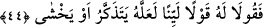

et-Te’vîlâtü’n-Necmiyye’de der ki: Allah Teâlâ’nın ilminde Mûsâ ve Hârun (a.s.)’ın
peygamber olarak Fir’avn’a gönderilmesinin ve ona yaptıkları tebliğin faydası
Fir’avn’a değil, kendilerinedir. Bu iki peygamberin gönderilmesinin hikmeti, onların
Rabbleri tarafından gönderilen, tebliğ eden ve korkutan birer peygamber olmaları;
böylece Fir’avn’un da onları inkar ederek küfrünün ortaya çıkmasıdır. Nitekim Allah:
“Helâk olanın açık bir delille helâk olması, yaşayanın da açık bir delille yaşaması
için (Allah böyle yaptı.)” (el-Enfâl, 8/42)
44. Ona yumuşak söz söyleyin. Belki o, aklını başına alır veya korkar.
“Ona yumuşak söz söyleyin.” Yâni ona karşı sertlik ve katılıkla konuşmayın,
yumuşaklıkla ve şefkatle konuşun. O’na zorluk çıkarmayın, kolaylık gösterin. Çünkü bir
işte yumuşaklık o işi güzelleştirir, sertlik ise çirkinleştir. Mûsâ (a.s.) tabîat itibârı ile
sert ve hiddetli bir insandı, kızdığı zaman başındaki başlık alevlenirdi. Onu bu sertliği
ve kızgınlığı, yumuşak davranması emredilerek tedâvi edilmiş ve halîm olması
sağlanmıştır. Nitekim “Habîb’in tabîatı yumuşaklık ve rahmet idi. Onun için Allah
Teâlâ’nın: “Onlara karşı sert davran.” (et-Tevbe, 9/73) buyurduğu gibi celâlin
kemâline ermek için sert davranmakla emrolundu. Kelîm (Mûsâ) ise şiddet ve sertlik
tabîatı üzere yaratılmıştır. Onun için cemalin kemâline ermek üzere yumuşak söz
söylemekle emrolundu. Peygamber Efendimiz (a.s.): “Allâh’ın ahlâkı ile
ahlâklanın”[79] buyurmuştur. Hadisteki hitap, hem cemal hem de celal sıfatları ile
ahlâklanmayı emretmektedir. Onlardan her biri kendi makamına daha uygundur.
Ayrıca Fir’avn zâlim kırallardandı. Böylelerine yapılan tebliğ sert bir dille olursa
genel de azgınlıkları artar. Bu sebeple Fir’avn’un yanında yumuşak konuşmak tebliğ
açısından daha faydalı ve daha emniyetliydi. Nitekim avama tebliğ yaparken sert
davranmak hikmete daha uygun ve daha te’sirli olur. Eğer Mûsâ (a.s.) sert konuşsaydı
Fir’avn’un tabîatı bunu kaldırmaz, bilakis kızarak onu dövdürmeye ve öldürmeye
niyetlenebilirdi. O halde yumuşak davranmanın faydası Mûsâ (a.s.)’adır.
el-Es’iletü’l-mukhime’de şöyle der: “Allah Teâlâ, Mûsâ ve Hârun (a.s.)’a dâvetin
başında oldukları için Fir’avn’a yumuşak davranmalarını emretmiştir. İşin başında ise
dâvet edilen kimsenin dâvet edildiği şeye bakıp incelemesi için ona mühlet vermek ve
yumuşak davranmak gerekir. Nitekim Peygamber Efendimiz (a.s.)’a: “Onlarla en güzel
şekilde mücâdele et.” (en-Nahl, 16/125) buyurulmuştur. Bu âyetin tefsirinde şöyle
denilmiştir: “Onlara mühlet ver ki bakıp düşünsünler ve delil getirsinler. Eğer onlardan
dikbaşlılık ve inad görülürse o zaman onlara sertlik ve şiddetle davranılır. Bu ise
durumların farklılığına göre değişir.
Yumuşaklık ve sertlikten her biri, duruma göre övülür, duruma göre yerilir. Nitekim